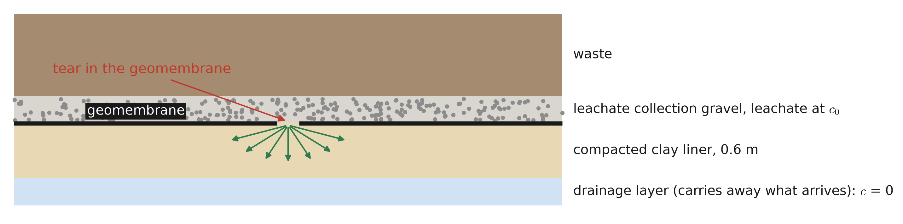
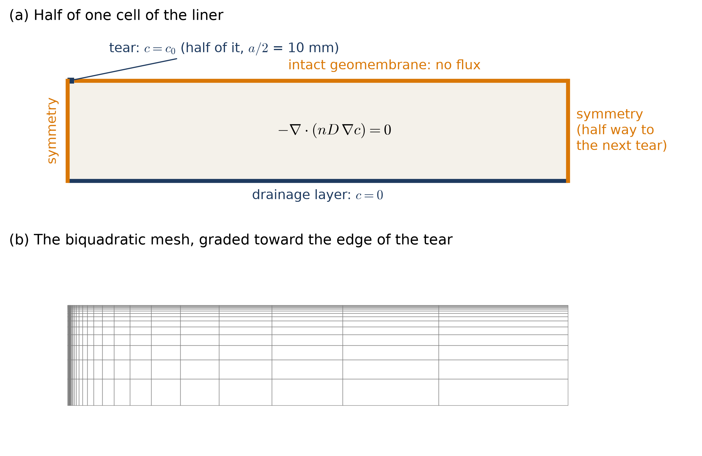
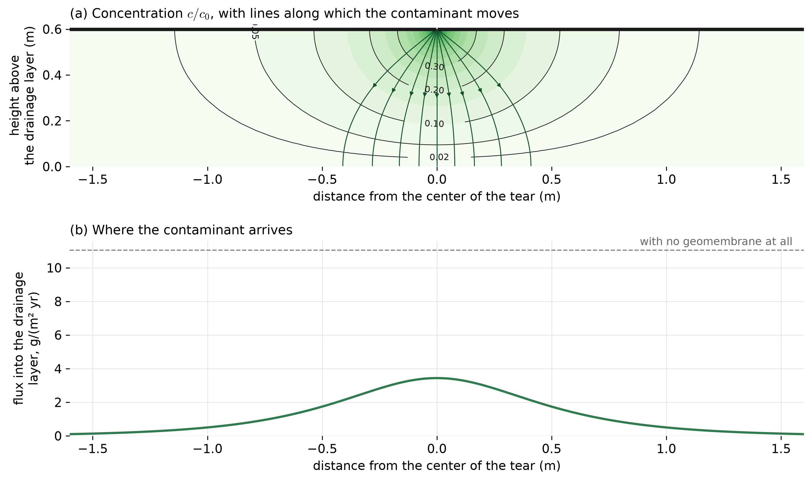
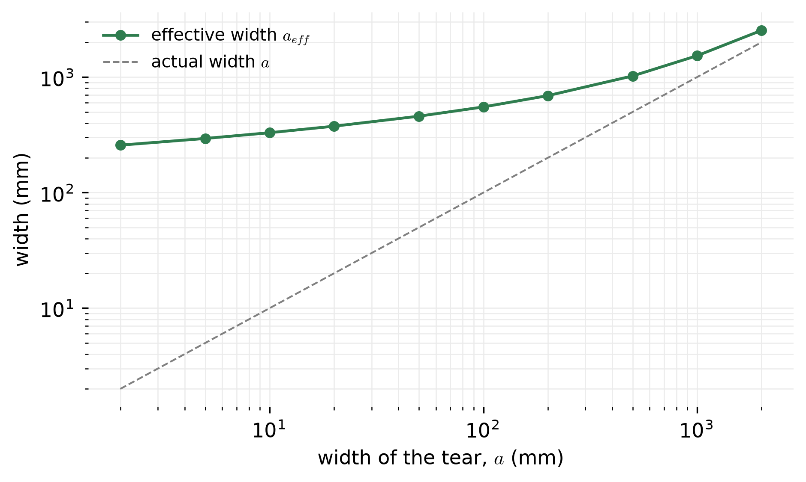

Diffusion Through a Damaged Landfill Liner
This page is one of the application pages for Class 24. It applies the scalar boundary value problem of this course to the diffusion of a contaminant through the clay liner beneath a landfill, at a place where the geomembrane above the clay is torn, and computes the quantity an environmental engineer would check: how much contaminant reaches the groundwater each year.
The physical problem

Modern landfills are built on a composite liner: a plastic (HDPE) geomembrane on top of a layer of compacted clay, as shown in Figure 1. The geomembrane is effectively impermeable to dissolved salts such as chloride, but it can be torn during construction, most often along seams. At a tear, leachate reaches the clay, and the contaminant spreads through it, partly downward and partly sideways beneath the intact geomembrane, until it reaches the drainage layer or aquifer below.
The question is how much contaminant passes through the liner because of a tear. Since the contaminant spreads sideways in the clay, the tear behaves as if it were wider than it is, and the purpose of the analysis is to find by how much.
The quantities and their units
| quantity | symbol | units | value here | role in the boundary value problem |
|---|---|---|---|---|
| concentration in the pore water | \(c\) | kg/m³ | \(c_0\) = 1.0 (1000 mg/L of chloride) at the tear | the unknown \(u\) |
| porosity of the clay | \(n\) | – | 0.35 | |
| effective diffusion coefficient | \(D\) | m²/s | 6 × 10⁻¹⁰ | |
| coefficient in Fick’s law | \(nD\) | m²/s | 2.1 × 10⁻¹⁰ | the coefficient \(\kappa\) |
| mass flux | \(\underline{J}\) | kg/(m²·s) | the flux \(-\kappa\nabla u\) | |
| thickness of the clay liner | \(L\) | m | 0.6 | |
| width of the tear | \(a\) | m | 0.02 |
The governing equation
Fick’s law states that a dissolved substance moves from high concentration to low concentration, at a rate proportional to the concentration gradient. In a porous material, only the pore water carries the substance, so
\[ \underline{J} = -nD\,\nabla c \qquad\Longleftrightarrow\qquad J_i = -nD\,c_{,i} , \]
where \(D\) is an effective diffusion coefficient that accounts for the winding paths through the pores. Conservation of mass for the substance gives
\[ \frac{\partial}{\partial t}\left(n\,c\right) + \nabla\cdot\underline{J} = 0 , \]
and once the concentration has stopped changing, at steady state,
\[ -\nabla\cdot\left(nD\,\nabla c\right) = 0 , \]
which is the problem of this course with \(u = c\), \(\underline{\underline{\kappa}} = nD\), and \(f = 0\). A substance that decays or biodegrades would add a term proportional to \(c\), which is not part of the problem solved in this course. A substance that is adsorbed onto the clay takes longer to reach steady state, but has the same steady-state flux.
Boundary conditions

Tears are assumed to repeat every 6 m along the liner, so the problem is symmetric about the center of each tear and about the point half way between tears. Only the half cell in Figure 2 is modeled.
- The tear: the clay is in contact with leachate, so \(c = c_0\), a Dirichlet condition.
- Beneath the intact geomembrane: no contaminant crosses the geomembrane, so \(nD\,\nabla c\cdot\underline{n} = 0\), a Neumann condition with zero data.
- The bottom of the clay: the drainage layer carries away whatever arrives, so \(c = 0\), a Dirichlet condition. If the drainage layer removed the contaminant only slowly, this would instead be a Robin condition with a mass-transfer coefficient, as in Class 22.
- The two sides: planes of symmetry, with zero flux.
The top boundary therefore changes from a Dirichlet condition to a Neumann condition at the edge of the tear, which is a singular point of the kind described on the Class 24 page. The flux is infinite at the edge of the tear, although the total flux through the tear is finite, so the mesh is graded strongly toward the edge, with the smallest elements scaled to the width of the tear so that narrow tears are resolved as well as wide ones.
The solver receives \(\underline{\underline{\kappa}} = nD\), \(f = 0\), \(g = c_0\) on the tear and \(g = 0\) at the bottom, and zero Neumann data elsewhere.
The solution

Figure 3 (a) shows that the concentration falls off rapidly away from the tear, and the contaminant spreads out in a fan beneath the geomembrane. Panel (b) shows where it arrives at the drainage layer: the flux is spread over a width of more than a meter, with its peak beneath the tear. The peak flux is much smaller than the flux through a liner with no geomembrane at all, but it is spread over a much greater width than the tear itself.
Quantities of interest
Mass flux per meter of tear
The total flux of contaminant through the liner, per meter of length along the tear, is the flux entering through the tear. It is computed from the reactions at the Dirichlet nodes on the tear, and multiplied by 2 for the two halves:
\[ Q = 4\.14 \ \text{g of chloride per year, per meter of tear}. \]
For comparison, a liner with no geomembrane at all passes \(J_1 = nD\,c_0/L\) = 11.0 g/(m²·yr) everywhere.
Effective width of the tear
The effective width of the tear is the width of liner without a geomembrane that would pass the same flux,
\[ a_{eff} = \frac{Q}{J_1} = 375\ \text{mm} , \]
which is 19 times the actual width of the tear. The contaminant does not pass straight down through a 20 mm strip; it spreads out in the clay and uses a much larger area.

Figure 4 shows the effective width for tears of several widths. For narrow tears, the effective width hardly depends on the actual width: a tear of 2 mm behaves like an opening 257 mm wide, 129 times its width, and a tear ten times wider, 20 mm, passes only 1.5 times as much. For wide tears, the effective width approaches the actual width, since most of the flux then passes straight down. In practice, this means that even very small defects in a geomembrane matter, and that the thickness of the clay beneath it, which controls how far the contaminant spreads, is as important as the geomembrane itself.
| mesh | nodes | \(Q\) (g/yr per m) | \(a_{eff}\) (mm) |
|---|---|---|---|
| bilinear | 496 | 4.184 | 378.8 |
| biquadratic | 1891 | 4.150 | 375.7 |
| biquadratic, refined once | 7381 | 4.144 | 375.2 |
| biquadratic, refined twice | 29161 | 4.142 | 375.0 |
| exact, for a layer without limit | 4.140 | 374.8 |
Table 2 shows that the flux, a sum of reactions, changes by less than 1% between the meshes and approaches the exact value given under the checks, even though the flux at the edge of the tear is infinite.
Checks
A problem with a known answer. For a layer of clay that extends without limit on both sides of a tear, the effective width has an exact solution, found by conformal mapping,
\[ a_{eff} = L\,\frac{K(m)}{K(1 - m)} , \qquad m = 1 - e^{-\pi a/L} , \]
where \(K\) is the complete elliptic integral of the first kind. It gives 374.8 mm for the 20 mm tear and 257.1 mm for the 2 mm tear, and the finite element values used on this page are larger by 0.11% and 0.16%. They are larger, not smaller, because with the concentration prescribed on the tear the flux is proportional to the energy of the solution, \(Q\,c_0 = \int_A nD\,|\nabla c|^2\,dA\), and a finite element solution never has less energy than the exact one (Class 23).
Balance of mass. The flux entering through the tear equals the flux leaving into the drainage layer to within a relative difference of 8 × 10⁻¹².
A one-dimensional limit. If the tear is as wide as the cell, so that there is effectively no geomembrane, the problem is one-dimensional and \(a_{eff}\) must equal the width of the cell, 6 m. The same code gives 6.000000 m.
Bounds. The flux through the tear must be larger than the flux straight down through the tear’s own width, and smaller than the flux through a liner with no geomembrane, so that \(a < a_{eff} < 6\) m, which every computed value satisfies.
The spacing of tears. Changing the distance between tears from 3 m to 6 m to 12 m changes \(a_{eff}\) by less than 0.04%, so the tears do not interact at this spacing and the result applies to an isolated tear.
Limits of the model
- Diffusion only. Water also flows through the tear and the clay, carrying the contaminant with it (advection). The relative importance of the two is measured by the Péclet number \(Pe = vL/(nD)\), where \(v\) is the Darcy flux of water. For a well-compacted clay with a hydraulic conductivity of \(10^{-10}\) m/s, a gradient of about 1 gives \(Pe \approx\) 0.3, so diffusion dominates. For a more permeable clay, or for a large depth of leachate standing on the liner, advection must be included, which adds a term to the equation that makes the problem non-symmetric, as discussed in Class 23.
- Steady state. The time to approach steady state is of the order of \(L^2/D \approx\) 19 years for chloride, which is short compared to the life of a landfill, but longer for substances that adsorb onto the clay.
- A long tear. The model is two-dimensional, so it describes a long tear such as a failed seam. A small round hole spreads the contaminant in three dimensions.
- No decay. Substances that decay or biodegrade arrive in smaller amounts than this model predicts.
Summary
- Steady diffusion is the problem of this course with \(u = c\), \(\underline{\underline{\kappa}} = nD\), and \(f = 0\).
- A tear in an otherwise impermeable barrier gives a boundary that changes from Dirichlet to Neumann along one face, with a singular flux at the change.
- The total flux, computed from the reactions, converges quickly despite the singularity.
- Spreading in the clay makes a narrow tear behave like an opening many times wider, which is expressed by its effective width.
- The model is checked by the balance of mass, a one-dimensional limit, bounds, and the insensitivity to the spacing of tears.